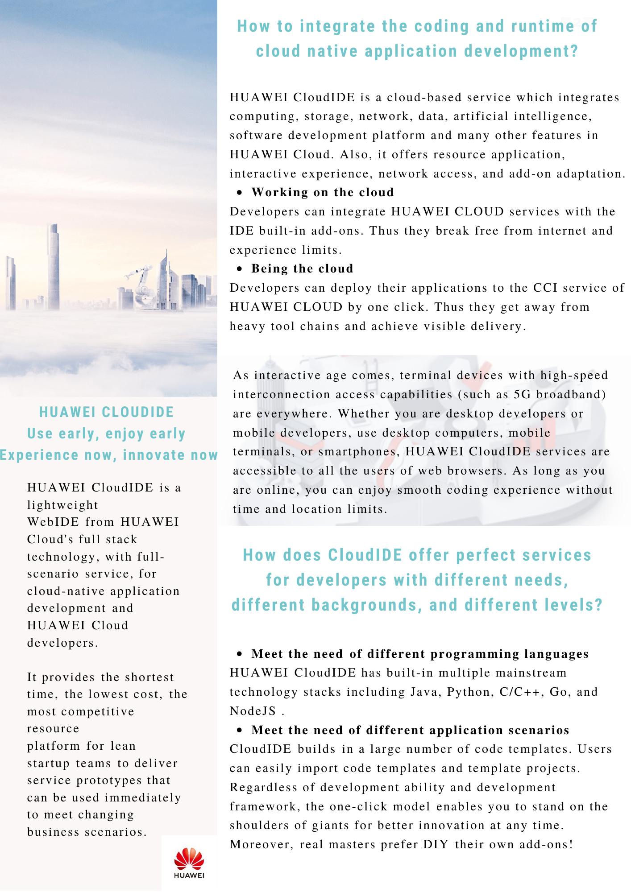
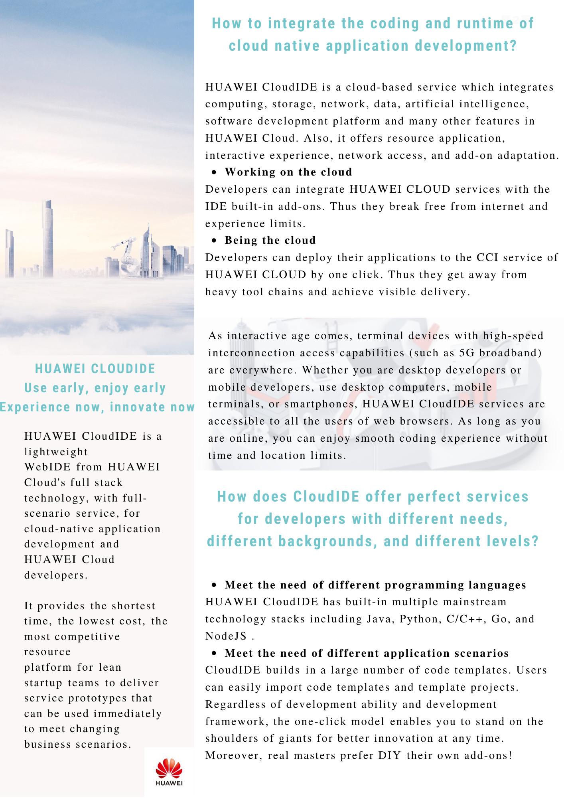

Introduction
Contribution
Clone Repo
Fork my repo on GitHub and clone it.
Write articles
The document is written under ./src, you can use mdbook to preview.
Mdbook is here.
The commands to start document preview under each system are as follows:
- Window
bin\win\mdbook serve
- Mac
bin/mac/mdbook serve
- Linux
bin/linux/mdbook serve
- Mac and Linux systems need to give mdbook executable permission：
chmod 755 bin/mac/mdbook or sudo chmod 755 bin/mac/mdbook
chmod 755 bin/linux/mdbook or sudo chmod 755 bin/linux/mdbook
Preview
After executing the above command, you can open
http://localhost:3000/
with your browser to preview articles.

Structured Writing
DITA Intro
DITA Learning Guide
XML Intro
TC Paper
Database Basic Knowledge
Developing Quality Technical Information
DQTI Accuracy
DQTI Accuracy02
DQTI Task Orientation
DQTI Task Orientation02
简明英文写作之 ASD-STE100 的写作规则有哪些？
Rules for Writers:------ George Orwell
- Never use a metaphor, simile, or other figure of speech which you are used to seeing in print.
- Never use a long word where a short one will do.
- If it is possible to cut a word out, always cut it out.
- Never use the passive where you can use the active.
- Never use a foreign phrase, a scientific word, or a jargon word if you can think of an everyday English equivalent.
- Break any of these rules sooner than say anything outright barbarous.
谈到英文写作，不得不谈一谈乔治·奥威尔著名的写作准则，六句话点明了简明英语写作的核心。而今天要介绍的 ASD-STE100 简化技术英语（STE）首页就附上了这六条经典准则。

STE 是一项国际性的航空航天标准，有助于技术文档 的明确性，让读者容易理解。STE源自航空航天和国防，为许多航空和国防项目所必备。如今，STE越来越多地应用于汽车、机械、电子电信和医疗设备等技术领域，用于降低翻译成本，提高翻译质量。
STE包括：
- 53条书写规则
- 针对公司专有术语的指南（名词和形容词为“技术名称” (“technical names”)）
- 一般词 (general vocabulary) （约900个批准词，以及大量STE中未批准的常用词）
今天我们就着重了解 STE 的书写规则，熟悉并掌握它们有利于提升技术写作水平。
1.Words
- 使用本规范表内的单词、技术术语、技术动词、形容词...
- 只使用表内单词所定义的解释
- 只使用表内单词所定义的解释
- 不要混淆技术动词和的呼吁
- 不使用行话或俗语
- 使用美式英语拼写
2.Noun clusters
-
名词词组不得超过三个名词
-
技术术语大于三个单词显示一次后，下文进行缩写
-
适当在名词前添加定冠词（the,a,an）或者指示形容词（this,these）
3.Verbs
- 只使用以下时态：不定式、祈使句（命令）、一般过去时、一般现在时、过去分词（只作形容词）、将来时
- 助动词不得作为复合动词结构
- "ing"形式的动词只能作为技术术语修饰词
- 书写流程时只使用主动语态，描述性写作时尽可能多使用主动语态
- 使用本规范表内动词描述动作（不使用名词或其他成分）
4.Sentences
- 书写简明的短句
- 缩写句子时不要遗漏单词或过度缩写（如don't）
- 使用垂直列表编列复杂文本
- 使用垂直列表编列复杂文本
- 使用连接词或短语联结相关主题
5.Procedural writing
- 书写短句，每句不超过20字
- 除非同时发生两个以上动作，每个句子只写一条指南
- 使用祈使句书写指南
- 如若指南以描述性文字作为开始，使用逗号分割独立短语或短句。
- NOTE 只用于提供信息而非指南。
6. Descriptive writing
- 逐步给出信息
- 使用关键字句有逻辑地组织文本
- 书写短句，每句不超过25个单词
- 每个段落内展示相关信息
- 每一段只留1个主题
- 每一段不可超过6句话
7.Safety instructions
-
使用合适单词（“warning”，“caution”）辨别危险层级
A warning tells the reader that there is a risk of injury or death.
A caution tells the reader that there is a risk of damage to objects.
-
在清晰简单的指令或场景下开启安全指南
-
解释特殊危险和可能后果
8.Punctuation and word counts
-
避免使用分号（；）
-
使用 “-" 连接紧密关联的单词
-
以下情况可以使用插入语：
-
文本引用
-
使用数字、字母解释文本项目
-
分步骤解释流程
-
缩写
-
同时解释一个名词的单复数形式
-
解释单词或部分句子
-
可替代内容
-
-
在垂直列表中，＂：＂与＂．＂具有同样作用，作为句子的结尾
-
插入语视作该句的一个单词
-
以下视作一个单词：
-
数字
-
计量单位
-
缩写
-
字母数字标识符
-
引用文本
-
标题、标语
-
-
用 "-" 连接的词语视为一个单词
9.Writing practices
- 如果无法逐字对照，请转换表达方式
- 正确使用本规范表内的单词
- 合并两个单词时不要形成短语动词
- 统一选择的术语或表达
- That 的使用： that 帮助读者理解整个句子的结构、避免模糊、帮助翻译，不可随意遗漏。
- With 的使用：本规范对于 "with" 有三种意思。这是一个功能性单词表明联系、帮助或分析、办法或工具，恰当使用可以清晰表达。
- 代词的使用：正确使用代词可以简化文章，但若出现语义不清请用具体单词替代。
TCer
思源华为杯创译大赛创作思路
本次创译大赛的背景是华为云的营销人员面向华为云的潜在和存量用户，在杂志（期刊）上发表的产品文案。文章围绕华为云CloudIDE产品，旨在提升品牌效应，让更多的人了解华为云可以帮助各行各业解决什么困难，应对哪些挑战，如何助力各行各业完成云转型。我将从文章结构、翻译与排版等方面阐述我的创译思路：
一、分析文本结构
结合文案北京信息，为了能为读者呈现清晰的文本，首先我分析文本结构，将内容分成三大部分别是What\Why\How：

本次大赛给到的文本是一段未经排版和分层的中文文案，我通过对原文的逻辑切割和重构，将文章解构成几个小节并分别汇总于What\Why\How 三大部分中。
What 部分从介绍软件开发工具的发展引入，由于云时代对精创利器的需求上升进而推出本文宣传的核心产品华为云CloudIDE产品。
Why 部分展示华为云CloudIDE产品对精创的支持之道和极高的验证效率两大产品亮点，为读者解释选择该产品的理由。
How 部分围绕用户在使用华为云的两大问题，即“如何打通云原生应用开发的编码与运行时”和“如何做到术业有专攻闻道有先后”，让读者了解华为云可以帮助各行各业解决什么困难，应对哪些挑战。
二、从翻译到技术写作
本次大赛的原文具有一定的技术专业性也带有营销宣传目的。在创译时要注意译文的准确性和可读性。要以读者为中心，简洁清晰地传达原文理念。同时，在语言风格上要拉近与读者的距离做到既平易近人又客观礼貌。这便是本次大赛的难点，处理得当也将成为一大亮点。因此，我将创译的过程上升至技术写作的维度，在翻译过程中我借鉴技术翻译、技术写作等规范进行创译。
IBM的经典之作《Developing Quality Technical Information》一书中提到高质量技术文本应遵循三大要求：“Easy to use”、“Easy to understand”、“Easy to find”。我也尽可能让译文符合这三大要求：

二、文档排版
排版也是最能体现创译之“创”的环节，清爽简洁的排版能让读者迅速进入“阅读模式”，感受到品牌的力量。我浏览华为官网，选择了符合华为云产品特点的官网图片与华为官方LOGO，使用PS软件将文案组织成更具可读性的杂志海报形式，让华为品牌一直想要表达的万物互联、科技未来的理念深入人心。

（图片来自华为云官网）
在全文大标题的处理上，我将原标题“华为云CloudIDE，云时代的精创利器“拆分成主标题“华为云CloudIDE”和副标题“云时代的精创利器”，用不同颜色和字体突出体现主标题，并添加了具有未来感的弧状设计，让读者在阅读的第一眼就能顺利进入我所打造的“文字世界”。
在产品亮点的处理上，特别是第二部分Why，我将所有产品特性加粗，列为无序列表并添加相应的图标抓住读者的眼球。
作品展示

 

作者：胡清莹
如需转载请注明作者与来源。